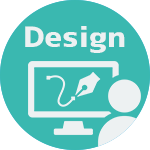

HTML5/CSS3
実務歴４年
基礎的なコーディング、またレスポンシブを考慮したコーディングも可能です。 １ページを作り上げることも、既存ページの修正も実務にて多数経験しております。

実務歴４年
基礎的なコーディング、またレスポンシブを考慮したコーディングも可能です。 １ページを作り上げることも、既存ページの修正も実務にて多数経験しております。

実務歴2年
SEOに特化したWEPページを制作実績があります。
Bootstrap5を使用したWebページや独自のテーマでのコーディング、PHPを使用したテーマのカスタムなど。

実務歴2年
Bootstrap5を使用したWebページの作成の際に使用。_variableなどの各種変数の設定も実務経験あり。

実務歴2年
実務にて多数ページを制作。row、colを使用したレスポンシブを考慮したコーディングが得意です。

実務歴2年
実務にてWordPressのテーマを独自に編集する際、ヘッダー、フッダーの編集をする際に使用。

実務歴2年
実務にて、フォームの入力チェックや自動入力などページに動的な機能を持たせる際に使用。

実務歴2年
Figmaでカンプのデザインが行えます。
実務で、カンプの作成や既存のカンプの修正などを行なっていました。
また、UIキットを使用して、Bootstrap5に対応したデザインも得意です。
実務歴2年
Adobe XDでカンプのデザインが行えます。
実務で、カンプの作成や既存のカンプの修正などを行なっていました。
実務歴10年
前職のWEB制作会社では、Photoshopを使って主にバナー制作や画像加工を行なっておりました。 グラッフィクデザインの際にも画像加工・レタッチなどを行なっておりました、特に切り抜きが得意です。
実務歴10年
エンタメ・音楽系イベントのフライヤーやウェディングのDMやアルバム作成などジャンルを問わず制作可能です。
学生時代からフリーランスとしてクライアントのデザインを制作した実績があります。
実務歴2年
SEOに特化したWEB制作会社での経験を活かし、SEOを考慮した構成やデザインからコーディングが可能です。
自分で制作や構成を考えた多くのページが上位表示になった実績があります。
ITパスポート試験 取得（平成30年7月）
普通自動車第一種運転免許 取得（令和 2 年 1 月）
ウェブデザイン技能士3級 取得（令和 4 年9月）